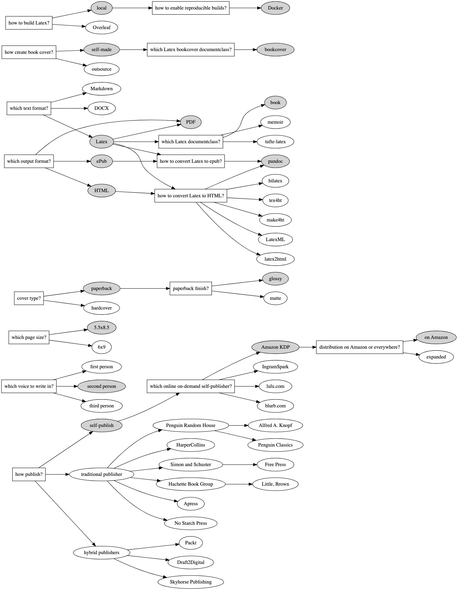

Ben Payne, 2024-08-19
Return home / list of posts

Choices: Latex, Markdown, DOCX, Quark XPress, Adobe InDesign
Edward Tufte recommends either Quark XPress or Adobe InDesign. As of 2024, Quark XPress costs $251 for one year or $599 for a perpetual license.
digraph G {
rankdir="LR";
how_publish [label="how publish?" shape=rectangle];
publish_self [label="self-publish", style=filled];
publish_traditional [label="traditional publisher"];
publish_hybrid [label="hybrid publishers"];
how_publish -> publish_self;
how_publish -> publish_hybrid;
how_publish -> publish_traditional;
publish_traditional -> "Penguin Random House" -> "Alfred A. Knopf";
"Penguin Random House" -> "Penguin Classics";
publish_traditional -> HarperCollins;
publish_traditional -> "Simon and Schuster" -> "Free Press";
publish_traditional -> "Hachette Book Group" -> "Little, Brown";
publish_traditional -> Apress;
publish_traditional -> "No Starch Press";
publish_hybrid -> Packt;
publish_hybrid -> Draft2Digital;
publish_hybrid -> "Skyhorse Publishing";
which_voice [label="which voice to write in?" shape=rectangle];
voice_first [label="first person"];
voice_second [label="second person", style=filled];
voice_third [label="third person"];
which_voice -> voice_first;
which_voice -> voice_second;
which_voice -> voice_third;
online_self_publisher [label="which online on-demand self-publisher?" shape=rectangle];
publish_self -> online_self_publisher;
publisher_amazon_kdp [label="Amazon KDP", style=filled];
publisher_ingram [label="IngramSpark"];
publisher_lulu [label="lulu.com"];
publisher_blurb [label="blurb.com"];
online_self_publisher -> publisher_amazon_kdp;
online_self_publisher -> publisher_ingram;
online_self_publisher -> publisher_lulu;
online_self_publisher -> publisher_blurb;
page_size [label="which page size?" shape=rectangle];
page_size_55x85 [label="5.5x8.5", style=filled];
page_size_6x9 [label="6x9"];
page_size -> page_size_55x85;
page_size -> page_size_6x9;
cover_type [label="cover type?" shape=rectangle];
paperback [label="paperback", style=filled];
cover_type -> hardcover;
cover_type -> paperback;
paperback_finish [label="paperback finish?" shape=rectangle];
paperback -> paperback_finish;
glossy [label="glossy", style=filled]
paperback_finish -> matte;
paperback_finish -> glossy;
kdp_distribution [label="distribution on Amazon or everywhere?" shape=rectangle];
publisher_amazon_kdp -> kdp_distribution;
kdp_distribution_amazon [label="on Amazon", style=filled];
kdp_distribution_expanded [label="expanded"];
kdp_distribution -> kdp_distribution_amazon;
kdp_distribution -> kdp_distribution_expanded;
text_format [label="which text format?" shape=rectangle];
latex [label="Latex", style=filled];
text_format -> latex;
text_format -> Markdown;
text_format -> DOCX;
latex_documentclass [label="which Latex documentclass?" shape=rectangle url="https://ctan.org/topic/class"];
latex -> latex_documentclass;
docclass_book [label="book", style=filled];
docclass_memoir [label="memoir" url="https://ctan.org/pkg/memoir?lang=en"];
docclass_tufte [label="tufte-latex", url="https://tufte-latex.github.io/tufte-latex/"];
latex_documentclass -> docclass_book;
latex_documentclass -> docclass_tufte;
latex_documentclass -> docclass_memoir;
bookcover_design [label="how create book cover?" shape=rectangle];
cover_self [label="self-made", style=filled];
cover_outsource [label="outsource"];
bookcover_design -> cover_self;
bookcover_design -> cover_outsource;
latex_bookcover_documentclass [label="which Latex bookcover documentclass?" shape=rectangle];
cover_self -> latex_bookcover_documentclass;
docclass_bookcover [label="bookcover", style=filled];
latex_bookcover_documentclass -> docclass_bookcover;
how_build_latex [label="how to build Latex?" shape=rectangle];
local [label="local", style=filled];
how_build_latex -> Overleaf;
how_build_latex -> local;
reproducible_build [label="how to enable reproducible builds?" shape=rectangle];
local -> reproducible_build;
docker [label="Docker", style=filled]
reproducible_build -> docker;
output_format [label="which output format?" shape=rectangle];
output_pdf [label="PDF", style=filled]
output_epub [label="ePub", style=filled]
output_HTML [label="HTML", style=filled]
output_format -> output_pdf;
output_format -> output_epub;
output_format -> output_HTML;
latex -> output_pdf;
latex_to_HTML_method [label="how to convert Latex to HTML?" shape=rectangle];
latex -> latex_to_HTML_method;
output_HTML -> latex_to_HTML_method;
pandoc [label="pandoc", style=filled];
latex_to_HTML_method -> pandoc;
latex_to_HTML_method -> latex2html;
latex_to_HTML_method -> htlatex;
latex_to_HTML_method -> tex4ht;
latex_to_HTML_method -> make4ht;
latex_to_HTML_method -> LatexML;
latex_to_epub_method [label="how to convert Latex to epub?" shape=rectangle];
latex -> latex_to_epub_method;
output_epub -> latex_to_epub_method;
latex_to_epub_method -> pandoc;
}
which can be visualized on dreampuf.github.io/GraphvizOnline/